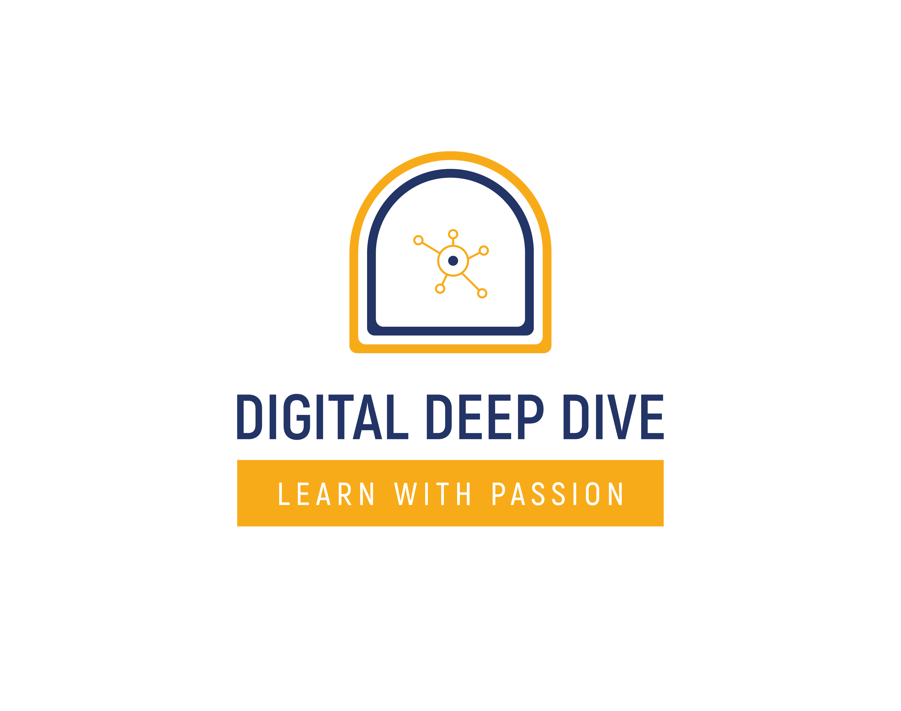
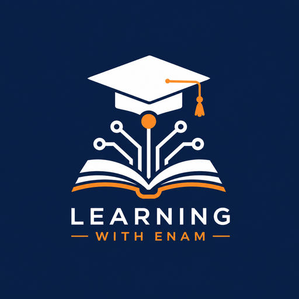
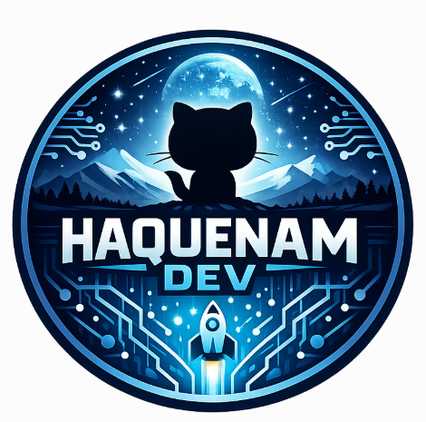
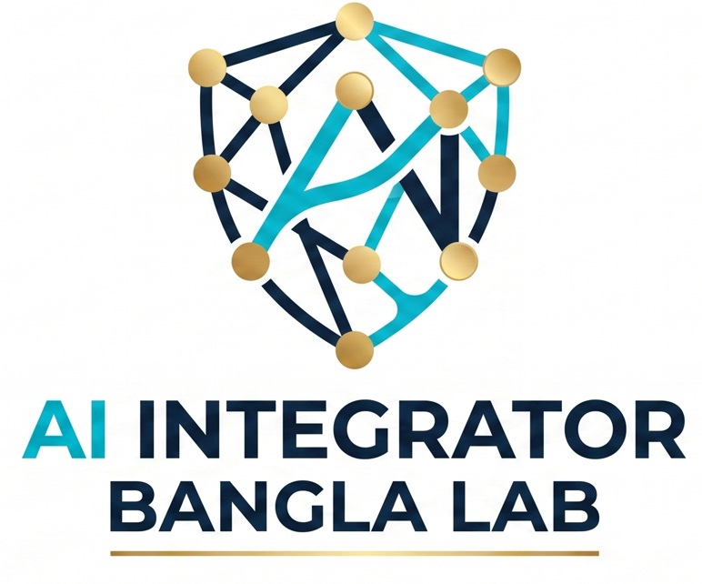

Video Courses
Technology, AI, cybersecurity, data, and digital skills lessons through Digital Deep Dive and related learning channels.
Visit YouTubeএনামুল হক স্কিল পাসপোর্ট
Free Open Learning Recognition PortalA free Skill Passport for learners completing Enamul Haque’s open technology learning pathways. The first pathway now supports registration, assessment, certificate generation, PDF and PNG download, share links, and central certificate verification.
This portal does not replace the courses. It helps learners validate completion, assess understanding, and generate shareable proof of progress after learning across Enamul Haque’s public channels.
এই পোর্টাল কোর্সের বিকল্প নয়। এটি এনামুল হকের পাবলিক লার্নিং চ্যানেলগুলোতে শেখার পর শিক্ষার্থীদের শেখা যাচাই, অ্যাসেসমেন্ট এবং শেয়ার করা যায় এমন রিকগনিশন পেতে সাহায্য করে।

Technology, AI, cybersecurity, data, and digital skills lessons through Digital Deep Dive and related learning channels.
Visit YouTubeCentral learning portal for Enamul Haque’s course links, learning updates, resources, and technology learning pathways.
Visit TechTalks Bangla
Course notes, practice quizzes, prompts, guides, and revision material for structured self learning.
Open GitBook
Open source tools, practice apps, templates, and hands on learning projects.
Explore GitHub
Guided practice tools, AI learning labs, custom GPT based support, and practical learning resources.
Open Practice LabCSE For Non CSE Students Module 1 is now live as the first completed end to end recognition pathway. Future cards are shown to make the roadmap visible without overcommitting availability.
মডিউল ১ অ্যাসেসমেন্ট এখন চালু
This assessment is for learners who have completed the related videos, GitBook material, and practice quizzes.
Recognition pathway for learners completing AI tools, APIs, agents, automation, and practical solution building.
Completion assessment for learners studying ethical cybersecurity foundations, online safety, and practical defensive thinking.
Recognition pathway for learners building foundational understanding of data, analytics, statistics, Python, and practical data thinking.
Completion assessment for learners developing beginner skills in Power BI, dashboards, reporting, data modelling, and business insight creation.
The Skill Passport recognises learning completion, assessment success, certificate generation, public sharing, and central verification across open technology learning pathways.
This portal provides completion assessment recognition for Enamul Haque’s open learning courses. It is designed for learning validation, progress recognition, and personal skill development. It is not a university degree, formal academic credit, or externally accredited professional qualification.
এই পোর্টাল এনামুল হকের ওপেন লার্নিং কোর্সগুলোর জন্য কমপ্লিশন অ্যাসেসমেন্ট ও রিকগনিশন দেয়। এটি শেখা যাচাই, প্রগ্রেস রিকগনিশন এবং ব্যক্তিগত স্কিল ডেভেলপমেন্টের জন্য তৈরি। এটি কোনো ইউনিভার্সিটি ডিগ্রি, একাডেমিক ক্রেডিট বা বাইরের অ্যাক্রেডিটেড প্রফেশনাল কোয়ালিফিকেশন নয়।